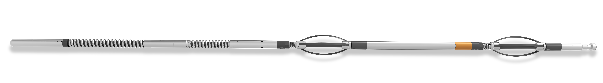

Why Orientation
Gyro Survey?
At TASK Energy Services, we offer advanced Orientation Gyro Survey Services designed to provide precise wellbore orientation data, ensuring the accuracy and efficiency of your drilling operations. Utilizing state-of-the-art gyro technology, we deliver reliable and comprehensive orientation measurements critical for successful well placement and trajectory control.
Key Features
- High Precision
Our gyro tools provide accurate orientation data, essential for precise wellbore trajectory and positioning.
- Real-Time Data
Obtain real-time orientation measurements, allowing for immediate adjustments and decision-making during drilling operations. - Versatility
Suitable for a variety of well types, including vertical, horizontal, and highly deviated wells, our gyro tools are adaptable to diverse drilling environments. - Robust Technology
Our advanced gyro technology ensures reliable performance in challenging downhole conditions, delivering consistent and accurate data. - Expert Support
Our team of experienced professionals offers comprehensive support, from planning and deployment to data interpretation and analysis.
Benefits of Gyro Orientation Services
- Enhanced Accuracy
Precise orientation data ensures accurate wellbore placement, reducing the risk of costly deviations and re-drills.
- Optimized Drilling Performance
Real-time data allows for immediate adjustments, optimizing drilling performance and efficiency.
- Cost Savings
By minimizing non-productive time and enhancing drilling accuracy, our gyro orientation services help reduce overall operational costs.
- Improved Safety
Accurate wellbore orientation data reduces the risk of well collisions and drilling hazards, enhancing overall safety.
- Comprehensive Data
Detailed orientation measurements provide valuable insights for better decision-making and improved wellbore planning.
- Versatile Applications
Suitable for various drilling applications, including directional drilling, formation evaluation, and wellbore stability analysis.
Applications
- Directional Drilling
Achieve precise wellbore orientation for optimal directional drilling operations. - Wellbore Stability
Ensure wellbore stability by obtaining accurate orientation data for better planning and execution. - Formation Evaluation
Enhance formation evaluation with reliable orientation measurements. - Collision Avoidance
Prevent well collisions by accurately monitoring wellbore orientation.